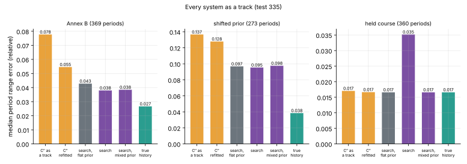
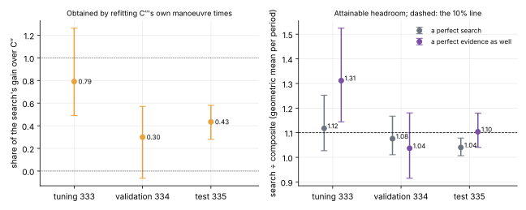
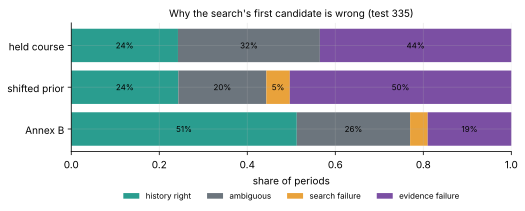
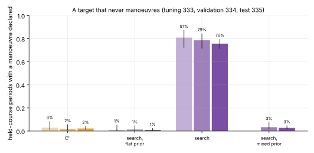
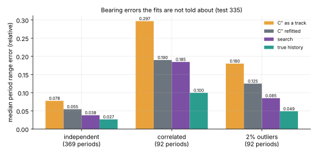
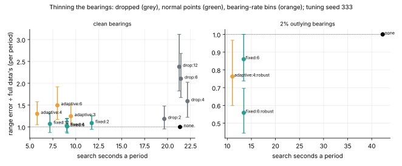

What the search is worth, what it gets wrong, and two faults the panel found
13 November 2026 · spec 014 · gitma2 · nothing trained
Owner's decision: classical work first, no GPU.
The refit keeps C″'s manoeuvres and adds everything but the search. The flat-prior search adds the search but knows nothing of how targets manoeuvre.

C″ ÷ search: 2.13 on Annex B data, 1.53 under the shifted prior. On held course the informed search is the worst system.
| Forecast | Result | |
|---|---|---|
| D1 share of the gain from the refit | 0.75 | 0.43 [0.28, 0.58] |
| D2 wrong histories: ambiguous / search / evidence | 0.45 / 0.10 / 0.45 | 0.53 / 0.08 / 0.39 |
| D3 headroom, perfect search | inconclusive | 1.04: not material |
| D3 headroom, perfect evidence as well | material | 1.10 [1.04, 1.18]: inconclusive |
| D4 false manoeuvres on held course | 0.80 | 0.76 |
| D5 learned whole-period model | by the rule | no GPU budget |
Three forecasts wrong, all as one tuning seed of 134 periods pointed. Panel: five approve with findings.

The panel: "about half", not "under half" (0.39 to 0.58 by definition; 0.47 over three seeds). The headroom is on the 10% line: 1.05 to 1.20 by convention.
Found by the panel's code reviewer. Recorded, not repaired: the code is registered.

The classing counted manoeuvres the spec says to leave out. Without them: wrong histories 0.57 / 0.11 / 0.33, first candidate right in about 60%. And "ambiguous" means this approximate evidence was close, not that the bearings cannot decide.

Over an hour the search invents one almost always; under 30 minutes still 46%. The mixed prior fixes it, at a cost the first draft denied: it calls a once-manoeuvring target quiet in 20% of periods against 6%.

The rule for D5 reads the left group only. The gaps to the right are 1.5 to 1.6 and nothing, classical or learned, was built against them.

Dropping loses; fixed normal points halve the run time at a cost not separated from zero or from 20%. The bearing-rate bins (orange) were set by noise: the idea is not yet tested.
The choice is the owner's; no GPU run before it. Write-up: /blog/2026/11/13/time-late-classical · record: experiments/20261112-tl2 (review.md)